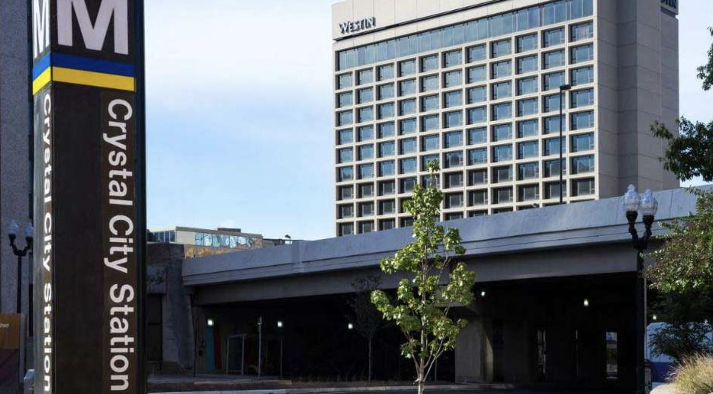

Washington DC Excursion (June 27-30)
27 June – Depart to DC after classes on Thursday
1500PM Pickup at One Tribe Place, One Tribe Place, 415 Richmond Rd, Williamsburg
28 Jun
7:30AM -11:30AM Pentagon Tour;
28 Jun
2 PM Institute for Study of War;
28 Jun
6 PM Dinner RusUZ in Arlington – a Russian Uzbek restaurant
29 Jun – Spy Museum, Church, Monuments –
10:00. Spy Museum.
29 Jun - 12:00 Brunch at Supra Georgian Restaurant.
29 Jun - 2:00 PM. St Nicholas Church in Washington DC.
30 Jun – 900AM Bus Pickup,
1000AM Arrive at Hillwood Museum
1030AM Mansion Private Tour (Confirmed with Hillwood Tour Services),
30 Jun - noon, Lunch at Hillwood
30 Jun - 1PM – Estimated departure to return to Williamsburg
